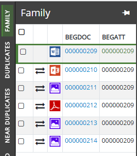
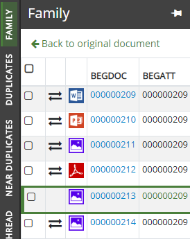

below the collapsed panels on the left side. Additional custom relationships may be created through
below the collapsed panels on the left side. Additional custom relationships may be created through Any additional relationships created for a case can be added to the collapsed Relationships panels. To display any relationships that are not visible, click the below the collapsed panels on the left side. Additional custom relationships may be created through
To view the relationship information for the currently displayed document, click the desired relationship tab. Click the pin icon  in the top right corner of the relationships tab to keep it open.
in the top right corner of the relationships tab to keep it open.
Click the Family panel as shown in the following:

A BEGDOC hyperlink indicates the document is part of the review pass. If the BEGDOC listing does not have a hyperlink, it is outside of the review pass and cannot be viewed from the Review grid. However, the document may be viewed on the Results tab.
Click the BEGDOC hyperlinks to display that document in the Document Viewer window. Return to the original document by clicking Back to original document as shown in the following:

If other BEGDOC hyperlinks are clicked within the relationship menu, clicking Back to original document returns back to the document that was first viewed within that family.
The BEGDOC hyperlinks also display in other Relationships panels, such as Email Thread, Duplicates, Near Duplicates, Document History, and Similar Documents.
Clicking outside of the open relationship tab automatically collapses it.
Click the pin icon  again to collapse the relationships tab.
again to collapse the relationships tab.
|
|
Note: Mass actions (coding and/or tagging) can be applied to selected items in a relationships panel. See |
Related Topics